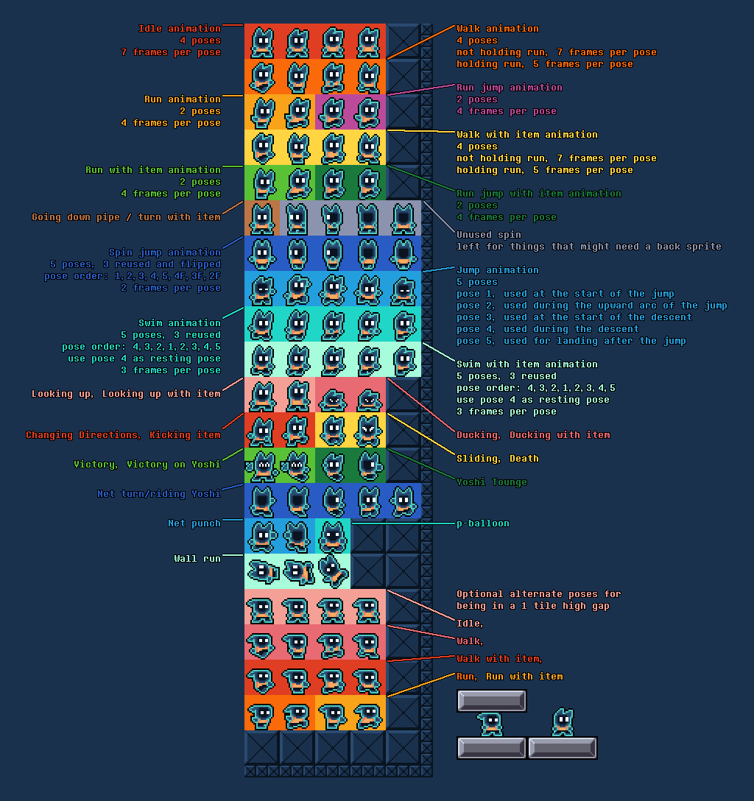
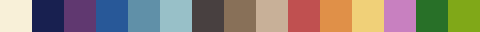
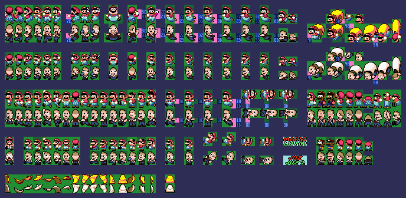

Pixel Art
Here's a collection various pixel art projects I've made over the years. A lot of my pixel art is done with SNES restrictions as it's my hobby.
This website is best viewed on a desktop browser.
Arcade


An acrade made for a SMW hack. SNES color restrictions. It uses 2 layers, the second layer is in an additive blend mode to create a glowing effect.
XP Character
Custom character from another unrelease SMW hack. It uses a fully custom animation system allowing for much more expressiveness than a normal SMW character. The above image is only a mockup however.
Below is a view into how the character sheet is laid out in memory.
XP Starting cutscene
Heres a room I made made for the same unreleased hack. SNES color restrictions. This also uses 2 layers but this time the second layer uses the subtraction blend mode.
Rhythm Heaven Reanimated
My contribution to the Rhythm Heaven Reanimated project. Animated entirely within aseprite.
Below are some WIPs from the animation.
And the original clip for reference.
Steampunk tileset

The winner of a graphics contest hosted by SMWCentral.net.
SNES color restrictions.
The theme of the contest was steampunk, but rather than making something gritty an over industrial I thought it would be fun to make it feel like a festival with ballons, bunting, and airships.
Check it out in motion from the video below!
Pixel recreations


A recreation of soy sauce and Fanta bottles for a SMW project. Packed representation underneath.
15 colors + transparent per bottle.
A 16-bit version of a popular bootleg sprite I did for my Grand Dad Mania video.
King dedede to Jack Black for The Glorious Octagon of Destiny
A custom Mario Kart 64 style sprite for SRB2Kart.
ITG2 background recreation
Original image.
Resized to 256x224 (SNES resolution).
Output from an automated tool (SNESGFX) for comparison.
Handcrafted result.
Only uses 1 layer and 1, 15 color palette.
Now using 1 layer and 5, 15 color palettes and very carefully swapping palettes.
Rompy
Rompy is a super mario world hack I was developing with all original graphics. The entire game uses only one 15 color palette shown below.
Checkpoint one
Dramatic screen from a yet to be released SMW hack.
Here's the interation process.
Kaizo race sprites
I was given the opportunity to create player sprites for the 2019 Blind Kaizo Race at AGDQ. Since then the sprites have been updated to my current standards, above is an updated sprite sheet for Juzcook.
Miscellaneous sprites
Various sprites I've made that don't need explanation.
Thanks for reading!
If any of this interests you and you want to get in touch, feel free to contact me at nathandonovan102@gmail.com or however else on my contact page!